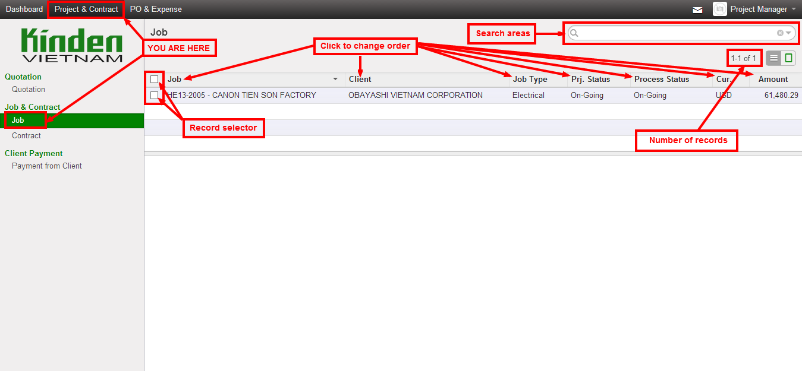
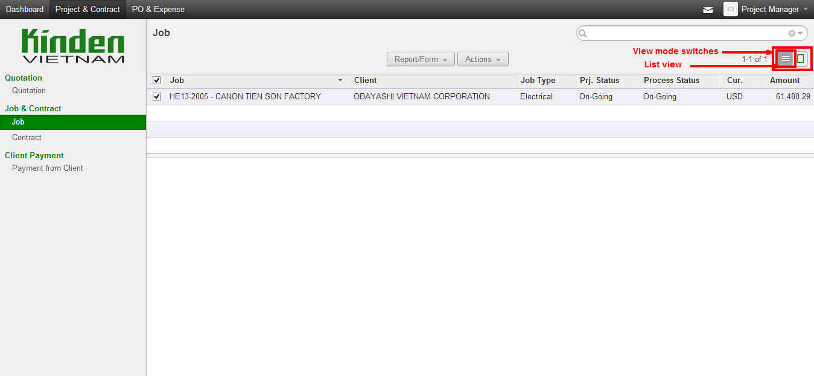
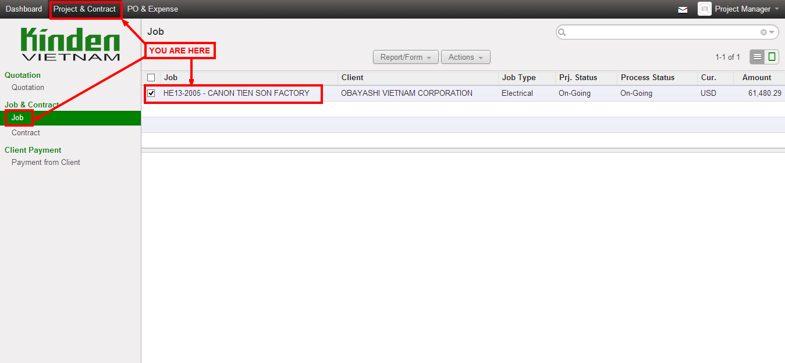
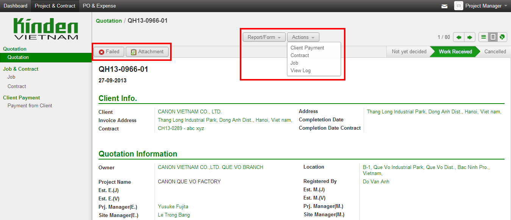
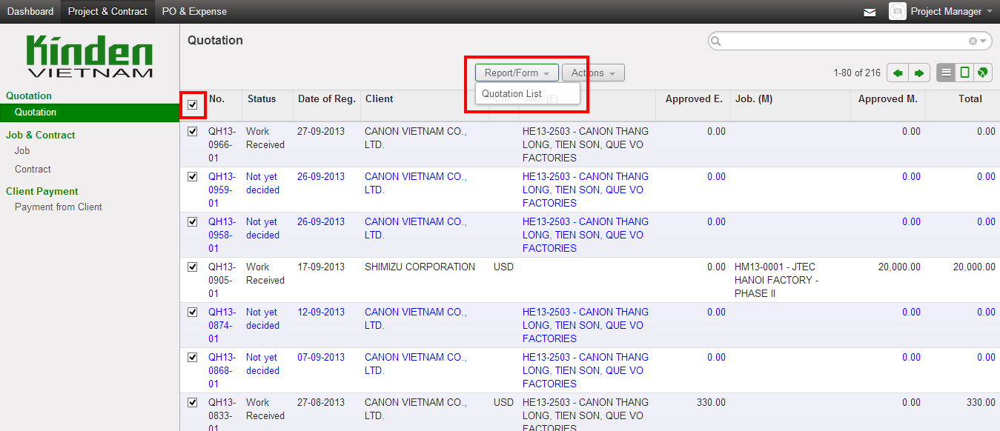
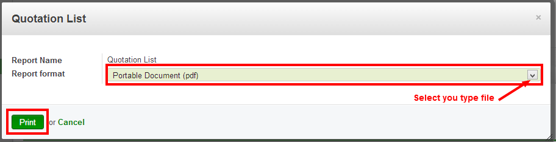
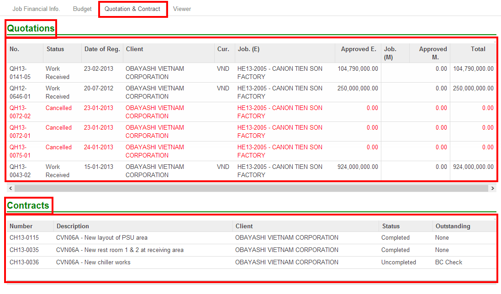
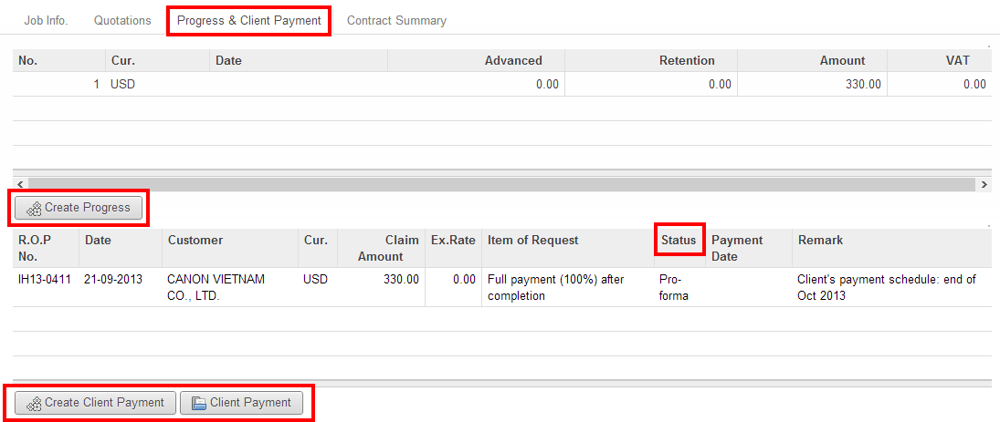
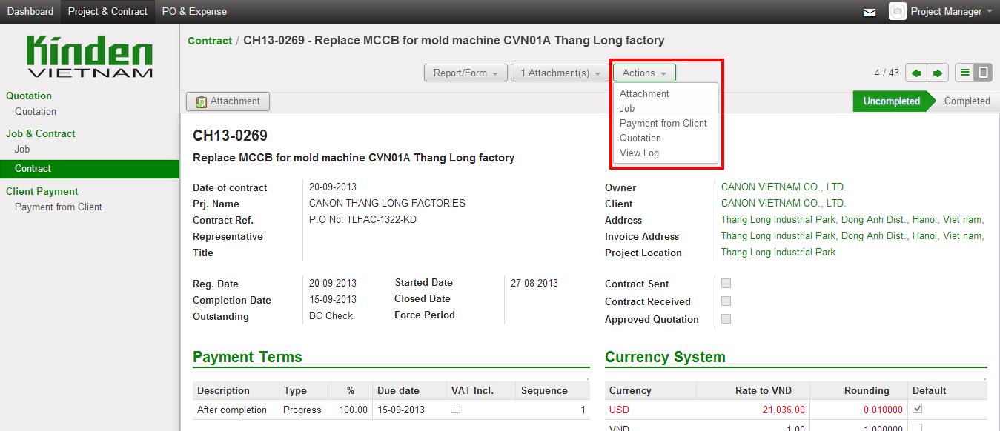
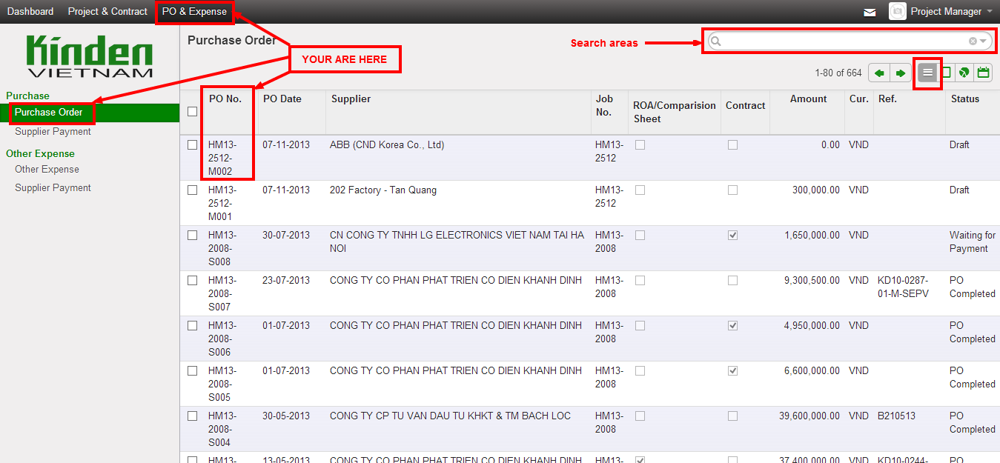

KINDEN VIETNAM OpenERP guide¶
General Information about new system¶
What is Open ERP¶
- ERP definition
- ERP: Enterprise Resources Planning
- OpenERP
- Is an open source ERP solution
- Minimize software license cost
- Modules based solution makes ease of customizing and deployment
- OpenERP is provided with standard modules:
- Sales management
- Purchasing
- Customer relation management
- Project management
- Warehouse management system
- Manufacturing
- Accounting
- Point of sale
- Asset management
- Human resource management
- KINDEN VIETNAM’s OpenERP currently can manage: Quotations
- Jobs (Budget control)
- Contracts to clients
- Invoicing to clients and Payment from clients
- Purchase Orders (to suppliers)
- Payment to Suppliers
Log in¶
Please use your provided username and password to log into the system. For Hanoi Head Office: Access link: http://openerp.kinden.com.vn:8069/ The Database name: KDVN_Data_HN
For Hochiminh City Branch: Access link: http://openerp.kindenhcm.com.vn:8069/ The Database name: KDVN_Data_HCM Login screen:


You can change your password by clicking to “Preferences”
After clicking to “Preferences”, the following screen of “Preferences” will appear

Please input your new password in to “Password” filed, then click “Change Password”. After saving the new password, you are required to logout and re-login by the new password to confirm that it has worked properly.
Please input your new password in to “Password” filed, then click “Change Password”. After saving the new password, you are required to logout and re-login by the new password to confirm that it has worked properly.
Note:
- The system OpenERP of Kinden Vietnam Co., Ltd. contains very important information of company’s business. Therefore, for security purpose, users can only access to the system by company’s registered computers via company’s LAN/Wifi . Users have responsibilities to keep TOP SECRET of their own login passwords to avoid information leak out to any third parties.
- The system requires user to re-login if there are no action after every one hour.
Dashboard¶
After log into the system, you will see a dashboard customized for you

The menu bars¶

In the top row and on the left of the screen, there are two menu bars where user can use to quickly access most of tasks
Project & Contract menu¶

Common features of data area¶
Click each of link in the quick links bar will open a specific data areas. However, those data areas have some common features:
Tree view (List view)

Is the view of a list of data in a data area. This is the first screen you see when click a link in the quick links bar. This screen list all the inputted data by row for easy to search for a specific data . - The Search Area is for searching data, just click and start to type information need to be searched. The system will try to guest and recommend search value to choose. If you need to search in more detail or advanced search, click the small traingle button at the far right corner .

- In the center of the List view screen is a Report/Form Actions button for quick access to (only appear when at least one row is selected):
- REPORTS/FORMS: for print reports or forms
- ACTIONS: for several other actions related to selected record(s).

- To the upper right of the screen is the View mode switches in which there are several ways to view the data: List, Form, Graph, Calendar, Gantt view. User can click Form to change viewing the data in Form view.

- If you want to display other records you can search for them or navigate through the whole list using the Previous, Next arrows. The list in the screen shows only the first 80 records.The actual number can be switched by clicking on the number and selecting one of the other limits, but you can’t select any other limit .

- The center of the tree list all the records in this data area. In each row, the user can click any where in the row to open directly the resource related. For example, if user click the row having HE13-2005 in the column No., the system will open the form view which describes the detail information of the quotation HE13-2005 (see the form view below).

Form view (Data in detail )¶
User can access to the detail data of a specific item by choosing the item from the list (List view) as mentioned above. Please see the below sample of a form view:

- On the upper top side of the screen, there are some icons that viewer can click to see the detail of attachments, data created/modified log info.
- 
Buttons and Status Bar¶
In the form view of almost sections, at the top of the form, there is a header bar including 2 parts: left part and right part.
- The left part: consist buttons relating to the object - are used by input users to change the status of the object/document
- The right part: is the status bar indicating available status to the object/document. The current status is the green one.
Navigation Bar¶
In the top left of the screen (Beside the KINDEN VIETNAM logo), there is Navigation Bar where user can easily move around related objects by select the link.

How to search and view your needed information¶
Quotation¶
When you choose “Quotation” (by click Project & Contract, then Quotation), the follow screen will appear.
Quotation – List view screen

In the Search Area, user can find the information about the needed quotation or other related information such as Quotation number, Client, Job number, Contract number, … By click the dropdown button, user can filter/group data by many criteria.
Currently, there is one report in Quotation section, user can select a quotation, then choose Report/Form to print the report: Quotation List.
Click on Report/Form and select your type file nedd to print:
- The related actions (quick links) are:
- Contract to client: a quick link to related contract (to client) of that quotation Payment from client: a quick link to above contract’s payment description Job: a quick link to the job that the quotation belongs to.

After displaying the needed quotation, user can see the detail information of that quotation(s) by clicking on the quotation line or clicking Form on the View mode switches. The screen will change to display the form view of that quotation(s).
Quotation - Form view screen
- The Form view of a quotation includes the below content:
- Quotation No./ Registration date/ status Client information Quotation information includes owner, project name & location, persons in charge; submit price/date Job info includes job numbers,approved amounts, working budget information Attachment status of the related document: quotation, quotation budget, working budget.
Job¶
When you choose “Job” (by click Project & Contract, then Job), the follow screen will appear.
Job- List view screen:

You can find the information about your needed job(s) by typing the Job number, or other related information to narrow the selection such as project name, status, owner name, client name, etc.
In Job task, the list of possible Reports are: Balance sheet (pdf.)
Balance sheet (xls) Balance sheet detail (pdf) Balance sheet detail (xls) Combine Balance sheet (pdf) Job list (pdf) Job and contract list (pdf) Work in progress (pdf) Work in progress (xls) Job and quotation list (pdf)
User can tick off the filtered job(s) to make above reports.

- The related actions (quick links) are:
- Contract : a quick link to the contract (to client) related to the chosen job. Other expense: a quick link to the expenses related to the chosen job Payment from client: a quick link to information about payment from client for the contract(s) related to the chosen job. Payment to supplier: a quick link to information about payment to suppliers for material/subcon/expense related to the chosen job. Purchase order: a quick link to purchase order for material/subcon of the chosen job Quotation: a quick link to the quotation(s) related to the chosen job

- The possible attachments are:
- ● Working Budgets
After displaying the needed job(s), user can see the detail information of that job(s) by clicking on the job line or clicking Form on the View mode switches. The screen will change to display the form view of that job(s ).

- The Form view of a job includes the below content:
Job No.
Job Name
Job type
Job status
Description (of work)
Owner Name/ Address
Client Name/ Address
Person in charge (PM/ GPM, SM, ASM)
Period (registration date, start date, completion date, close date)
Job amount (total approved amounts of approved quotations)
Job exchange rate
- Information tabs include:
- Job financial info.: Summary of contracted, budgeted, cost, paid, claimed & received amounts in VND as well as the equivalent amounts in USD are displayed in Job Financial Info. ta
Job - Form view screen

In Budget tab, the latest working budget of the chosen job is displayed with budget amount in VND as well as the current cost amount , paid amount in VND.
To the lower of the screen is the Budget History which displays the summary of total budget amount/ material/subcontractor/site expense/ indirect expense/business profit amounts and the status of all working budgets that have been made for the chosen job. The hard copies of these working budgets are attached to the database and can be seen at the ATTACHMENTS.

- Quotation & Contract tab :
The quotations & contracts related to the chosen job are displayed in Quotation & contract tab. User can click on a quotation /contract line to quickly open the Form view of that quotation/contract to check further information.
Contract to client¶
When you choose “Contract” (by click Project & Contract, then Contract), the follow screen will appear.
User can find the information about contract (to client) by typing the contract number, or narrow the selection by filtering from the other related information such as job number, project name, description, owner name, client name, etc .

User can also access to a specific contract to client from Quotation – Form view interface of the related quotation(s) by clicking on the switches to form view on the top right icon:

After displaying the needed contract, user can see the detail information of that contract by clicking on the contract line or clicking Form on the View mode switches. The screen will change to display the form view of that contract.
- The Form view of a contract includes the below content:
- Contract number
- Owner Name/Address
- Client Name/Address
- Project Name
- Project Location
- Description (of work)
- Ref No. (Client’s contract/PO No.)
- Date of registration/start/completion/close
- Contract status (completed/uncompleted/ outstanding)
- Contract amount
- Payment term
- Exchange rate (actual ex. Rate for contract in VND or interbank rate of the registration date for contract in USD)

- Information tabs includes: Job info, quotation, progress evaluation & payment, contract summary:
- Job Info tab: The job that the chosen contract belong to is displayed in Job info tab. User can click on Job number to directly access to that job’s Form view.
- Quotation tab: display the quotation(s) that belong to the chosen contract as well as the Electrical/Mechanical proportional amount. User can click on quotation number to directly access to that quotation’s Form view

- Progress & Client Payment tab:
Progress: display the detail of progressive amount(s) that match with the Progress Evaluation sheet(s) being issued accompanied with the Request(s) of Payment. Payment from client: display the Request of Payment number(R.O.P. No.), request amount(s),received amount(s) & currency as well as the status of the
Request of payment:
§ Draft: The Request of Payment has not been created yet. (automatically drafted based on contract payment condition)
§ Waiting for payment: The Request of Payment has been submitted to client but has not been paid yet.
§ Done: The Request of Payment has been submitted to client and has been paid.

- Contract Summary tab: display the contracted amount, claimed amount (total amount of all requests of payment issued), received amount (total received amount from client), accounts receivable amount (=claimed amount – received amount), balance amount (= contracted amount – received amount). These amounts are displayed in VND

In Report/Form, user can tick off the filtered contract(s) to make the possible Reports:
- List of Contract to client (xls)
- List of Contract to client (pdf) (This report is not available at that moment)
- Monthly received work (xls)
The possible Forms are:
- Confirmation of receipt work (pdf)
- Progress (Progress Evaluation sheet)
The related actions (quick links) are: - Job: a quick link to the job that the chosen contract belong to. - Payment from client: a quick link to information about payment from client for the chosen contract. - Quotation: a quick link to the quotation(s) related to the chosen contract. The possible attachment is: - Contract
Payment from client¶
When you choose “Payment from Client” (by click Project & Contract, then Payment from Client), the follow screen will appear.
User can find the information about Request of payment & payment situation from client by typing the Request of Payment number (R.O.P. No.), or narrow the selection by filtering from the other related information such as contract number, job number, client name, owner name, etc .

After displaying the needed Request of payment, user can see the detail information of that Request of Payment by clicking on the R.O.P. line or clicking Form on the View mode switches. The screen will change to display the form view of that Request of Payment.

The Form view of a Request of payment includes the below content: - Request of payment number (R.O.P. No.) - Contract number - Client name/address - Owner name/address - Payment term: payment condition of that R.O.P. - Attachment: To determine whether the Progress evaluation sheet has been sent/ received. - Information tabs includes: Claim Details, VAT Invoice & Payment:
- Claim Details: display the payment condition of that R.O.P., contract amount, the R.O.P. currency, total issued R.O.P amount / VAT amount previously, proportional amount of Electrical/Mechanical work in that R.O.P. amount and the R.O.P. amount .

- VAT invoice & Payment: display VAT invoice issuing information (for admin staff only) and detail of payment from client: Payment date, currency of R.O.P.,amount, client’s paid currency, client’s paid amount (VND), exchange rate, and Bank (in case client pay in USD, the interbank ex.rate on the payment date shall be applied to calculate).

In Report/Form, user can see the possible Reports: - List of R.O.P. (pdf) - List of receivable Items (xls) - List of receivable Items (pdf) User can get the report List of receivable by ticking off any item. The possible Forms are: - Request of issuing Invoice (pdf) - Request of Payment (pdf) - Progress Evaluation Sheet The possible Attachments are: - Request of Payment - Progress Evaluation sheet - Certificate of Completion, etc.

Purchase Order (for material & subcontract)¶
When you choose “Purchase Order” (by click PO & Expense, then Purchase Order), the follow screen will appear. User can find the information about material/subcon orders by typing the Purchase Order number (PO. No.), or narrow the selection by filtering from the other related information such as Job No., PO. price, budget code, supplier name, status of order, etc.
After displaying the needed Purchase Order, user can see the detail information of that ..
Purchase Order by clicking on the PO. line or clicking Form on the View mode switches. The screen will change to display the form view of that Purchase Order.
The Form view of a Purchase Order includes the below content:
- Order No.: PO. No.
- Project : Job No. & job name
- PO type: for Material or labour (subcontract)
- Person in charge (procurement staff)
- Order Ref: Supplier’s reference number
- PO. Date & Effective Date
- Without contract: tick box using for the case buying material without contract (under 15 million VND). In this case, the Purchase Order has internal control meaning only and the Request of Approval (R.O.A.) is not applied.

- Information tabs includes: Purchase Order, Request of payment, Contract to supplier:
- PO Info tab: display information about supplier name/address, scope of work (material name), payment term, currency, ex.rate (effect only for contracts in foreign currency), PO detail (breakdown of quotation & price), and status of PO:
§ There are six (5) kinds of P.O. status: Draft, Waiting for R.O.A, Waiting for Delivery, Waiting for Payment and P.O. Completed. Please see the Appendix I for the detail description of these status.

- Payment & VAT Invoices: display the detail of request of payment from supplier for the chosen PO. : Internal payment number, amount & currency, status of payment document .
§ Status of payment document: There are nine (9) kinds of payment status: Draft, Procurement checking, B.C. checking, B.C. passed, PM checking, BOD checking, BOD approved, Paid, Rejected. Please see the Appendix II for the detail description of these status.

- Contract to Supplier (for adminstrator only): this tab displays the PO process which includes date of each procedure (scanned, submitted, sent, received). These information are recorded for person in charge to control the PO.

The possible reports/ forms here are: - Inv. Check List - State 01 (pdf) - Inv. Check List - State 02 (pdf) - Order Payment (xls) - Payment by Banktransfer (pdf) - Payment by Banktransfer (xls) - Payment in Cash (pdf) - Payment in Cash (xls) - Payment to Supplier (xls) - R.O.P Bank Payment (pdf) - R.O.P Bank Payment - Not Uic (pdf) - R.O.P Cash Payment (pdf) - R.O.P Cash Payment - Not Uic (pdf) - Settlement Expense (pdf) - Summary Supplier Invoice (pdf) - Supplier’s Invoice (pdf)

When you choose “Supplier Payment” (by click PO & Expense, then Supplier Payment), the follow screen will appear. User can find the information about supplier payment by typing the Request of Payment No. (internal payment number), or narrow the selection by filtering from the other related information such as PO No., Job No., budget code, supplier name, status of R.O.P., etc.

User can also access to a specific Request of payment to supplier – from a Form view interface of the related Purchase Order by clicking on the line at Request of Payment tab.

After displaying the needed Request of payment (to supplier), user can see the detail information of that Request of Payment by clicking on the R.O.P. line or clicking Form on the View mode switches. The screen will change to display the form view of that Request of Payment. The Form view of a Payment document to supplier includes the below content: - Request of payment No. : Internal control number, started with “IN” - Date of request - PO. No.: the related Purchase Order - Project: Job No. & Job name - Supplier name - Procurement person in charge - Description of payment - Payment in cash/bank transfer - Information tabs includes: Payment details, Payments & VAT Invoice:

- Payment details tab: display the detail information of the payment: Job No., Budget code, Material description, amounts, status of payment & document circling record.

- Payments & VAT Invoice tab: display the detailed information about VAT invoices issued by supplier and breakdown of payment to the supplier (payment date, amount, currency)
The expenses related to projects (Budget code 4000 ~ 7999) are inputed in “Other expense” in order to separate with material/labour orders.
When you choose “Other Expense” (by click PO & Expense, then Other Expense), the follow screen will appear.
User can find the information about expenses by typing the Expense No. (internal payment number), or narrow the selection by filtering from the other related information such as Job No., budget code, supplier name, status of expense payment., amount, etc.

After displaying the needed expense, user can see the detail information of that expense by clicking on the expense number (in red color) or clicking to Form on the View mode switches. The screen will change to display the form view of that expense

The Form view of an expense includes the below content: - Expense No. : Internal control number, started with “EN” - Project: Job No. & job name of that expense - Expense date - Information tabs: Other expense, Request of payment
- Other expense tab: display the detail information of the expense such as supplier name/address, description, currency, amount, budget code, jobs, and status of expense.
§ Differ from the status of Purchase Order (for material & subcontract), there are only three (3) simple kinds of expense status: Draft: The expense has not been submitted yet Waiting for payment:The expense has been submitted and waiting for payment Done: The expense has been paid.

- Request of payments tab: display the current procedure of that expense (State) as well as the VAT invoice issued for the payment.
§ Differ from Payment to supplier (of material & subcontract), there are only three (3) simple kinds of payment status for expense: BOD checking: Payment document has been checking by Budget Control and Admin Director. BOD approved: Payment document has been approved by Admin Director. Paid: Payment document has been paid.
The possible Form here is R.O.A. but this form is not used for expense. The possible quick link here is: - Payment to Supplier
Appendices¶
APPENDIX I. - PURCHASE ORDER STATUS –HANOI

APPENDIX II. - STATUS OF PAYMENT FOR MATERIAL & SUBCONTRACT (DOCUMENT CIRCULATION) - HANOI Procurement BC check PM check BOD check ACC Nine kinds of payment document status: 1/ Draft 2/ Procurement checking 3/ BC checking 4/ B.C passed 5/ PM checking 6/ BOD checking 7/ BOD approved 8/ Paid 9/ Reject